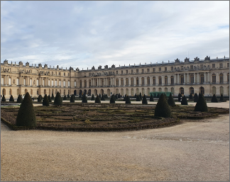

|  | |||
|---|---|---|---|
| 프랑스 | 베르사이유궁전은 유럽최고의 왕권을 자랑하던 부르봉 왕조가 107년네 걸쳐살았던 절대군주 체제의 대표적사적지입니다. 루이13 세가 사냥을하며 휴식을 취할목적으로 작은 별장을지은것이 태양왕 루이14세의 막강한 권력과 3만여 명의 인력으로 50년간 지어졌다고합니다 | ||
| 유럽여행 | 베르사이유 | 여행추천 | 궁전의 건축 담당은 르 보(Le Vau), 조원 담당은 르 노트르(Le Notre), 전체의 장식 담당은 화가 르 브랭(Le Brun), 진행은 콜베르, 모든 결정은 국왕 자신이 맡았다. |
| 여행시간 | 5시간 | 여행일자 | 2022. 12. 08 |